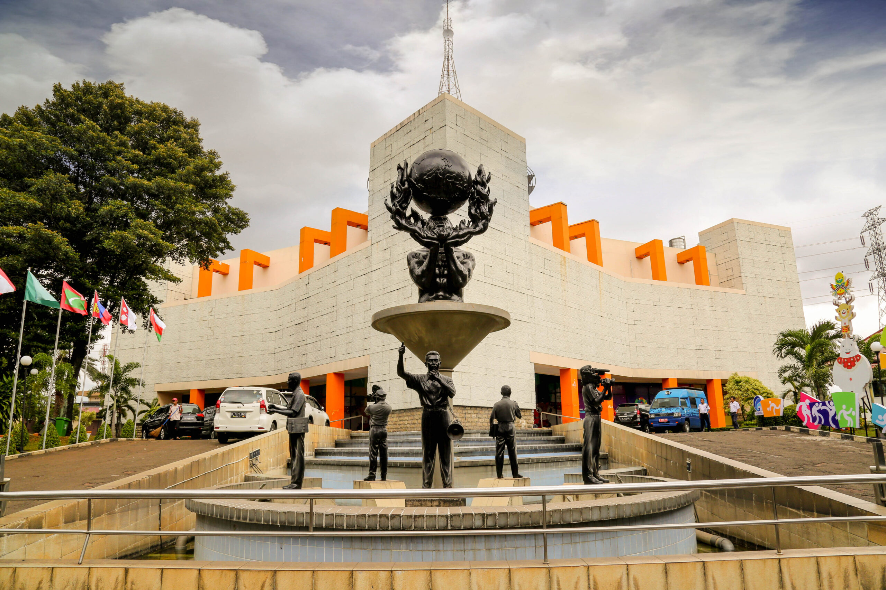
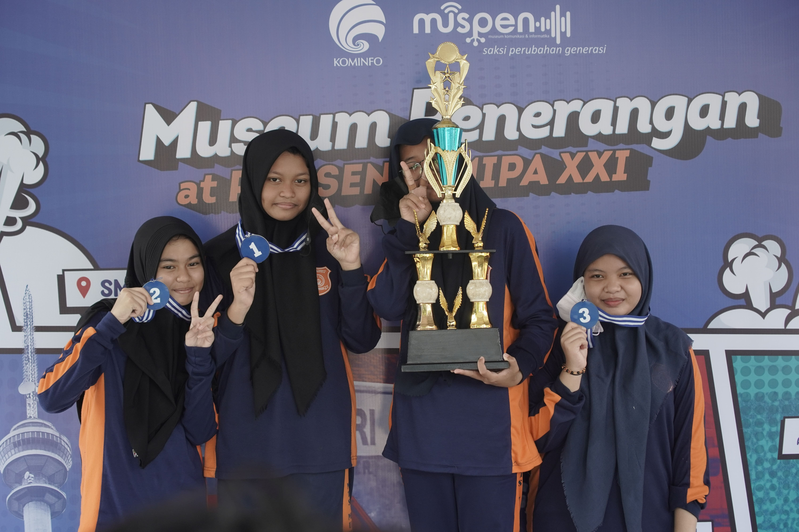
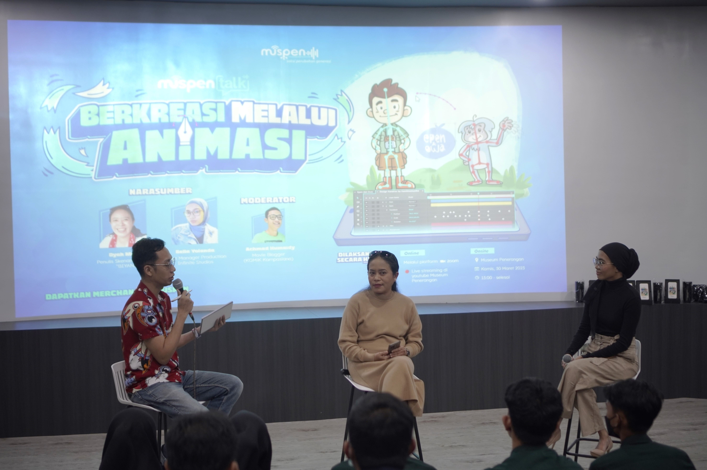
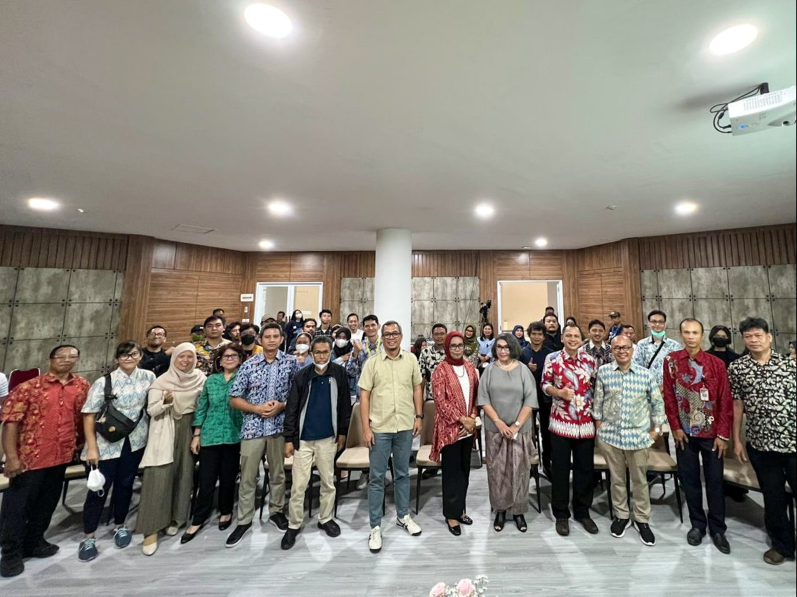

Beranda
Koleksi
Event
Tentang
Halo Muspeners,
Selamat datang di Museum Penerangan! Jelajahi sejarah dan budaya komunikasi Indonesia.
Reservasi Kunjungan

Ruangan Pamer
TESTIMONI
Testimoni
❮
❯
MUSPEN TV
Muspen TV
Lihat Lainnya...
ARTIKEL
Forum

MUSEUM
🕑 Mar Thu, 2023
💬 233 Comment
Kita adalah Sang Juara! Museum Penerangan Goes to...

MUSEUM
🕑 Apr Mon, 2023
💬 196 Comment
Muspen Talk "Berkreasi Melalui Animasi"

MUSEUM
🕑 May Wed, 2023
💬 148 Comment
BELAJAR DARI "PRINSIP-PRINSIP KEBENARAN JURNALIST...